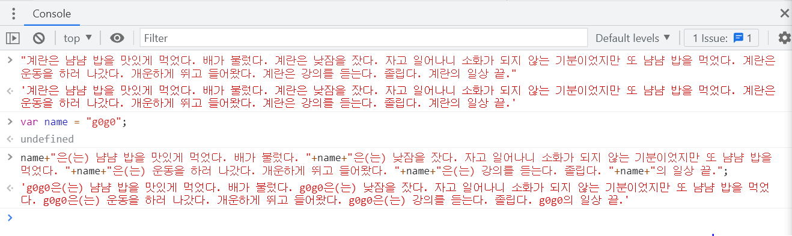

데이터타입, 변수, 웹브라우저 제어
6. 데이터타입 - 문자열과 숫자
추천 검색어: javascript data type
- Primitive values
- Boolean type
- Null type
- Undefined type
- Number type
- BigInt type
- String type
- Symbol type
- Objects (collections of properties)
1+1 => +: 이항 연산자(두개의 피연산자와 한개의 연산자를 가지는 연산) 중에서 산술 연산자
js에서 숫자는 연산이 가능하다
1+1
2
2-1
1
2*4
8
6/2
3
properties => Object.defineProperty()

string + string = string
document.querySelector('body').style.backgroundColor = 'black'
body와 black은 string이란 걸 알 수 있다.
7. 변수와 대입 연산자
변수 vs 상수 => variable vs constant
=: 대입연산자 => 좌항과 우항을 결합해서 우항의 값을 만들어낸다.
변수를 왜 쓰는가

변경이 필요할 때 일괄적으로 처리할 수 있다. 예를 들어 수정할 부분이 만개라고 한다면 만개를 일일이 수정할 필요없이 변수를 이용해 한번에 처리 가능.
변수를 쓸 때는 꼭 변수 앞에 var을 사용하도록 한다. 이유는... 나중에... (var: variable)
document.querySelector('body').style.backgroundColor = 'black'
backgroundColor => 변수
= => 대입 연산자
black => 대입된 값
8. 웹브라우저 제어
night 버튼을 클릭 시 night mode로 변환하려면 body 태그에 스타일 적용이 필요
<body style="background-color: black; color: white">